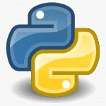

- Home
- java
- javascript
- c#
- c++
- python
|

Python is an advanced programming language that is interpreted, object-oriented and built on flexible and robust semantics.
WHO USES IT?
Professions and Industries:
- Python developers, software engineers, back end developers, Python programmers
- Used by employers in information technology, engineering, professional services and design
Major Organizations: Google, Pinterest, Instagram, YouTube, DropBox, NASA, ESRI
Specializations and Industries: Web and Internet development (frameworks, micro-frameworks and advanced content management systems); scientific and numeric computing; desktop graphical user interfaces (GUIs)
WHAT MAKES LEARNING IT IMPORTANT?
Python lets you work quickly to integrate systems as a scripting or glue language. It’s also suited for Rapid Application Develop (RAD).
The game Civilization 4 has all its inner logic, including AI, implemented in Python.
NASA uses Python in its Integrated Planning System as a standard scripting language.
Features:
- Simple to learn and easily read
- Associated web frameworks for developing web-based applications
- Free interpreter and standard library available in source or binary on major platforms
WHERE DID IT START?
Python was developed in the late 1980s at CWI in the Netherlands and first released to the public in 1991.
|